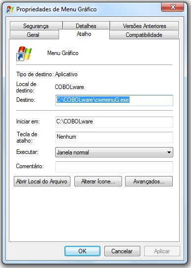

Executor para o usuário final
Formato:
O atalho para executar um sistema sob Windows deve ter sempre propriedade "Iniciar em:" configurada para a pasta onde residam os arquivos do runtime do COBOLware, não há necessidade de que o produto esteja instalado, basta que os arquivos estejam disponíveis em uma pasta mapeada em uma letra de drive, o atributo destino pode ser preenchido com nome do executável correspondente a modalidade de apresentação visual desejada, Gráfica, Texto em janela Windows e texto em janela DOS (cwmenuG, cwmenuT ou cwmenuF respectivamente), seguido dos indicadores da pasta onde estejam os programas COBOL compilados e a pasta onde do arquivo de configuração cwconf pertinente ao sistema, exemplo: /c:F:\sistema\cil /d:F:\sistema\home.
